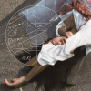
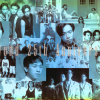
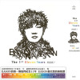

Music |
web结业报告 | 推荐 | 乐库 | 看点 | 排行 | 视频 | 搜索 | 立刻听歌 |
| 收藏文章♥ | 包含音乐▶ | 相关阅读✈ | 该作者更多▦ | 查看评论▶ |
“愿你我仍在平凡的世界里，还是那个不被人理解和不循规蹈矩的创造者。”
5月31日 第一首主打《城市傍晚》已上线 6月9日 第二首主打《海上日记》已上线 6月18日 第三首主打上线 6月25日 全专上线 毛不易 第三张个人全新创作专辑 《幼鸟指南》 集结11首全新创作 一览11个人生音乐坐标 人生和创作的旅途 如幼鸟飞向南方 幼鸟在半空相遇 群山里、海中央 城市傍晚的十字路口 爱是雾中的灯塔 这孤独的世界 你并不孤独 我与你同行 写实主义音乐诗人 毛不易 人间观察 音乐实录 《幼鸟指南》 11首全新创作，11个人生音乐坐标，仿佛是他在这两年的见闻分享和真实记录。 人人都是幼鸟 在这孤独的世界 我与你同行 天空可能会阴霾灰暗，但幼鸟的心一直向南。 毛不易 《幼鸟指南》音乐地图坐标系 毛不易的感受，荒井老师的编曲，让歌有了更美好的感觉。 1.城市傍晚 @【遗憾】 发生着这样那样的平凡故事，其中有我也有你。 2.海上日记 @【告别】 当年出发的港口早已不知所踪，而所谓的彼岸也无迹可循。
总有一种感情，让你不求回报地想给予对方一切，让你对未来充满期待， 它可能不够轰轰烈烈，也未必会天荒地老， 但只要你未来某天想起它时，心里还会浮起一丝暖意，这便是它的全部意义。
给我个机会重来一次，我也不会想要去改变什么，因为有遗憾，才能显出来那些不遗憾的好。
可时光啊，不听话，总催着人长大，这一站到下一站旅途总是停不下。
这个世界上,还有很多不被认可的梦想,不被祝福的感情,不被眷顾的孩子,他们不曾犯错,却只能颤颤巍巍,单薄地行走在路上， 这首歌送给他们,借天地万物,不求终将到达某处,只求路上少些阻碍,让他们通往平凡。
毛不易简介
毛不易，本名王维家，1994年10月1日出生于黑龙江省齐齐哈尔市泰来县，中国内地流行乐男歌手，毕业于杭州师范大学护理专业。 2017年，参加腾讯视频选秀娱乐节目《明日之子》，获得全国总决赛冠军，从而正式进入演艺圈 [1] ；11月11日，推出个人原创单曲《项羽虞姬》 [2] ；12月28日，获得 腾讯娱乐白皮书音乐年度之星奖 [3] 。2018年1月7日，获得首届金鲛奖年度十佳网络新星奖 [4] ；4月，作为“无限唱作人”参加江 苏卫视音乐唱作类真人秀节目《无限歌谣季》 [5] ；5月31日，推出首张个人录音室专辑《平凡的一天》 [6] ；同年，获得亚洲新歌榜 年度盛典年度最佳音乐人奖 [7] 、亚洲音乐盛典最具潜力男歌手奖、年度最佳唱作人奖 [8] 。2019年3月25日，其演唱的歌曲《平凡的一天 》获得第26届东方风云榜音乐盛典十大金曲奖、最佳作词奖 [9] ；8月，获2019福布斯中国100名人榜荣誉 [10] 。2020年1月，以首发歌手身份 加盟湖南卫视音乐竞技节目《歌手·当打之年》 [11] ；1月22日，推出第2张个人音乐专辑《小王》 [12] 。9月20日，举办毛不易2020“像我这样的 人”线上演唱会 [13] 。
人生经历
从小自学吉他和低音提琴，后师从低音提琴演奏家尹富源教授。 2017年，参加腾讯视频选秀娱乐节目《明日之子》，最终以1400多万的粉推人气获得全国总决赛冠军，并得到了白金唱片及“最强厂牌”的称号 [1] ； 比赛期间，毛不易共演唱了14首原创歌曲，其中《消愁》的播放量24小时破千万、首周破亿 [20] ，并在酷狗单曲畅销榜中蝉联3个月冠军 [21] ；9月1日，推出首张个人现场专辑《巨星不易工作室 No.1》，收录了包括《像我这样的人》、《消愁》等在内的7首歌曲，该专辑陆续在海外 各大音乐平台上架，并登上KKBOX新曲速报歌单推荐榜，他也因此正式进军海外 [22] 。 2008年参与制作赵薇专辑《我们都是大导演》，并担任发布会表演嘉宾；同年担任陈坤专辑《谜&Me》的专辑制作人。
11月4日，以“星小编”的身份做客网易娱乐明星互动直播栏目《娱乐新鲜派》 [23] ；同年，参加“明日之子2017全国巡回演唱会” [24] ；随后，参加湖南卫视脱口秀节目 《天天向上》的录制，这是他的电视综艺首秀 [25] ；11月11日，推出个人原创单曲《项羽 虞姬》 [2] ；此外，他还为迪士尼电影《寻梦环游记》演唱了主题曲《请记住我》 [26] ；11月 23日，获得网易年度有态度大赏年度最有态度唱作歌手奖 [27] ；12月3日，获得腾讯视频星光大赏年度音 乐新势力奖 [28] ；12月14日，推出第2张个人现场专辑《巨星不易工作室 No.2》；12月18日，为电影《卧底巨 星》演唱的推广曲《感觉自己是巨星》正式上线 [29] ；12月25日，为电影《无问西东》演唱的宣传曲《无问》正式上线 ；12月28日，获得腾讯娱乐白皮书音乐年度之星奖 [3] ；12月31日，参加江苏卫视跨年演唱会，演唱了《消愁》。
|  | |
| ♬陈粒 | ♬小半 |
|  | |
| ♬五月天 | ♬阿黛尔Adode |
|  | |
| ♬李宗盛 | ♬陈奕迅 |
| 1陷阱 |
| 2那是你离开了北京的生活 |
| 3年少有为 |
| | 关于我们 | | | 联系我们 | | | 问题中心 | |